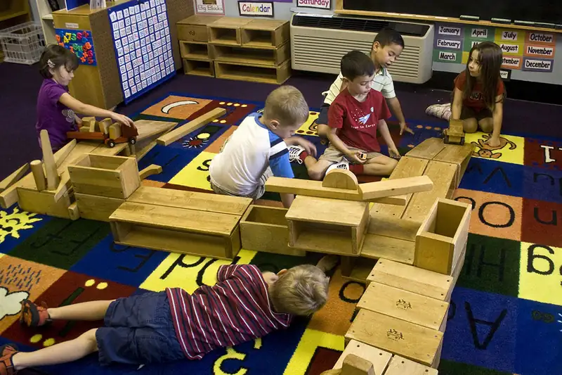
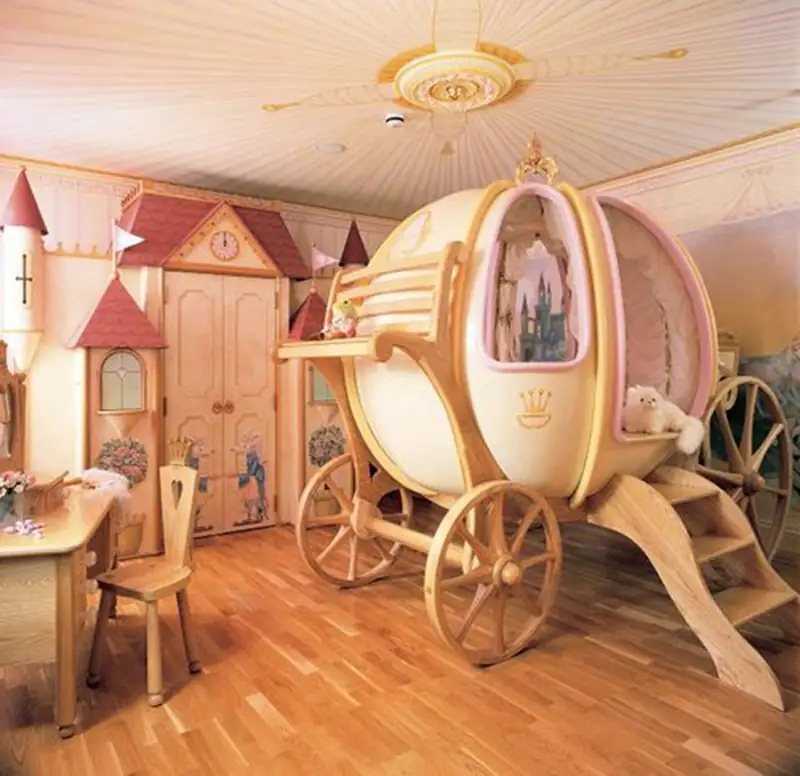

Chapter 5: Socialization¶
Introduction¶
When Noel was fifteen, they saw a flyer about joining the volunteer ambulance corps. Noel was intrigued: They had an interest in pursuing medicine, and liked volunteering, but ambulance work seemed like something for older people with professional training. At the information session, Noel learned that junior members of the ambulance corps could help with supplies and communications, and were allowed to ride on ambulance calls to assist the Emergency Medical Technicians (EMTs). Noel was thrilled and signed up right away.
Noel was amazed by how confidently the EMTs—some just a few years older than Noel—made consequential decisions. The EMTs relied heavily on their training and guidelines, but they did so quickly. And upon arriving at the hospital with a patient, Noel was similarly impacted by the efficiency of the nurses, doctors, and other staff. Noel developed a deep level of respect for that level of decisiveness and the expertise it required.
Over their college years, Noel found themselves drawn toward the more strategic aspects of medicine, and pursued a degree in healthcare administration. Meanwhile, they did get an EMT certification and joined the college emergency services team; later on, while in grad school, Noel was a part-time professional EMT in a small city. With good grades and varied experience, Noel was recruited into a great job several states away.
After interning in an urban hospital and spending years as an EMT, Noel had come to expect a degree of urgency in medicine. Hospital administration was certainly not an ambulance facility, but the slow pace of Noel's job was agonizing. Every inventory list, bill of lading, email reply, and even meeting schedule went through at several people for approval. Noel enjoyed the job, but was used to working more quickly.
One day, Noel was looking over an equipment bill and noticed a serious error that no one else had caught. Nearly $250,000 in overpayment was about to be paid to a supplier. Noel immediately called the accounting department. No answer. Then they sent a group Slack message and fired off an email to their boss and a few other people involved with the billing and payment process. Noel was about to head across the building to address the issue in person, but finally a message popped up: "Good eye, Noel. We'll hold this payment until we clear things up."
Toward the end of the day, Noel received a message from their manager, Tracy, asking them to stop by. Tracy's office was crowded with three other people, including the director of accounting. Expecting to be congratulated, Noel was shocked when Tracy began outlining all the things Noel had done wrong.
"Your frantic messaging and over-the-top language was incredibly disruptive...almost irresponsible," Tracy said.
"But I was right," Noel replied in a louder voice than they intended.
"Right or wrong," Tracy said, "you should have told your contact in accounting and waited to see the outcome. Instead, you panicked."
"I did call accounting, but when I didn't hear back, I needed to take the next step. I wasn't panicking; I was being decisive." As Noel said this, they were thinking of all the times they had saved someone's life by making good decisions.
Tracy sighed. "Decisiveness isn't good when it's disruptive. You caused five people to drop everything and start investigating. A few thought it was their fault." Noel started to protest but Tracy shook her head. "I understand that you are coming from a faster-paced environment, and I can tell you've been frustrated. But if you're going to work here, you're going to have to work within our culture. Instead of pushing against how we do things, try to appreciate them. Otherwise, no one will be happy, least of all you." Tracy told Noel to take the evening to think about it and come back for a talk the next morning.
Who was correct in this situation? Noel saved the hospital hundreds of thousands of dollars, or at least the hours of managing the refund process. Tracy, with broader responsibilities, was considering the long-term impacts of Noel's style, and how Noel, as a talented member of the team, will function within the team.
Tracy was concerned about the organization’s culture. Culture, as discussed in the chapter on the topic, is the shared beliefs, values and practices of a group. Countries, societies, religions, and sports teams all have culture, and companies do, too. When you interview for a job, it will likely come up. Researchers who study organizations find that when workers aren't properly incorporated into the corporate culture, they begin a cycle of mutual disappointment, where workers are likely to reject company values and ultimately leave or be fired (Cebollero 2019).
Why didn't Noel enjoy the job, and why were people put off by Noel's approach? For the most part, Noel wasn't prepared for the pacing and style; their previous experience was in opposition to the culture of the hospital. Company culture is easier to learn if someone is predisposed to it, while others might need time to unlearn past behaviors (Schein 1988). Experts indicate that the responsibility for such adaptation is shared between the new employee and the company.
How could Noel have learned, and what could Tracy have done to help? Company culture is learned the same way that other types of culture are learned: through observing and adapting to the norms and values, understanding and applying beliefs, and, in general, seeking to be productive as a member of the group. Just like a child learns how to behave during a play-date or school day, people learn to be productive partners through an ongoing process called socialization.
Socialization is the process through which people are taught to be proficient members of a society. It describes the ways that people come to understand societal norms and expectations, to accept society’s beliefs, and to be aware of societal values. Socialization is not the same as socializing (interacting with others, like family and friends); to be precise, it is a sociological process that occurs through socializing.
While Noel's story is about a relatively advanced stage of life, socialization is crucial for early childhood. Even the most basic of human activities are learned. Learning to crawl and then walk are major milestones, but as any parent, guardian, or family member of a toddler knows, other minor accomplishments can be life-altering for the child: climbing stairs, safely getting out of bed, sitting in a regular chair, and drinking from a regular cup. Likewise, family behaviors and values must be learned, sometimes through observation and sometimes through active instruction.
In the following sections, we will examine the importance of the complex process of socialization and how it takes place through interaction with many individuals, groups, and social institutions. We will explore how socialization is not only critical to children as they develop but how it is also a lifelong process through which we become prepared for new social environments and expectations in every stage of our lives. But first, we will turn to scholarship about self-development, the process of coming to recognize a sense of self, a “self” that is then able to be socialized.
5.1 Theories of Self-Development¶
Learning Objectives
By the end of this section, you should be able to:
- Differentiate psychological and sociological theories of self-development
- Explain the process of moral development
When we are born, we have a genetic makeup and biological traits. However, who we are as human beings develops through social interaction. Many scholars, both in the fields of psychology and in sociology, have described the process of self-development as a precursor to understanding how that “self” becomes socialized.
Psychological Perspectives on Self-Development¶
Psychoanalyst Sigmund Freud (1856–1939) was one of the most influential modern scientists to put forth a theory about how people develop a sense of self. He divided the maturation process into stages, and posited that people’s self-development is closely linked to their early stages of development.
According to Freud, failure to properly engage in or disengage from a specific stage results in emotional and psychological consequences throughout adulthood.
Psychologist Erik Erikson (1902–1994) created a theory of personality development based, in part, on the work of Freud. However, Erikson believed the personality continued to change over time and was never truly finished. His theory includes eight stages of development, beginning with birth and ending with death. According to Erikson, people move through these stages throughout their lives. In contrast to Freud’s focus on psychosexual stages and basic human urges, Erikson’s view of self-development gave credit to more social aspects, like the way we negotiate between our own base desires and what is socially accepted (Erikson 1982).
Jean Piaget (1896–1980) was a psychologist who focused on the role of social interactions in child development. He recognized that the development of self evolved through a negotiation between the world as it exists in one’s mind and the world that exists as it is experienced socially (Piaget 1954). All three of these thinkers have contributed to our modern understanding of self-development.
Psychologist Harry Harlow (1905–1981) is known for studying the role of social relationships in human development by observing the impact of isolation and maternal deprivation on the development of young rhesus monkeys. Harlow found that the monkeys, when subjected to isolation, exhibit disturbed behaviors, including self-harm, and had a difficult time integrating when reconnected with other monkeys. Harlow also introduced isolated monkeys to simulated surrogate mothers, some that were covered in cloth while others were constructed out of wire. Based on observed behaviors, the young monkeys appeared to develop attachment with the cloth mothers and lean on them for emotional support. More than seven decades later, this experiment continues to inform the research of psychologists, sociologists, and those interested in human development.
Sociological Research: Sociology or Psychology: What’s the Difference?
You might be wondering: if sociologists and psychologists are both interested in people and their behavior, how are these two disciplines different? What do they agree on, and where do their ideas diverge? The answers are complicated, but the distinction is important to scholars in both fields.
As a general difference, we might say that while both disciplines are interested in human behavior, psychologists are focused on how the mind influences that behavior, while sociologists study the role of society in shaping behavior. Psychologists are interested in people’s mental development and how their minds process their world. Sociologists are more likely to focus on how different aspects of society contribute to an individual’s relationship with his world. Another way to think of the difference is that psychologists tend to look inward (mental health, emotional processes), while sociologists tend to look outward (social institutions, cultural norms, interactions with others) to understand human behavior.
Émile Durkheim (1858–1917) was the first to make this distinction in research, when he attributed differences in suicide rates among people to social causes (religious differences) rather than to psychological causes (like their mental wellbeing) (Durkheim 1897). Today, we see this same distinction. For example, a sociologist studying how a couple gets to the point of their first kiss on a date might focus her research on cultural norms for dating, social patterns of sexual activity over time, or how this process is different for seniors than for teens. A psychologist would more likely be interested in the person’s earliest sexual awareness or the mental processing of sexual desire.
Sometimes sociologists and psychologists have collaborated to increase knowledge. In recent decades, however, their fields have become more clearly separated as sociologists increasingly focus on large societal issues and patterns, while psychologists remain honed in on the human mind. Both disciplines make valuable contributions through different approaches that provide us with different types of useful insights.
Sociological Theories of Self-Development¶
One of the pioneering contributors to sociological perspectives was Charles Cooley (1864–1929). He asserted that people’s self understanding is constructed, in part, by their perception of how others view them—a process termed “the looking glass self” (Cooley 1902).
Later, George Herbert Mead (1863–1931) studied the self, a person’s distinct identity that is developed through social interaction. In order to engage in this process of “self,” an individual has to be able to view him or herself through the eyes of others. That’s not an ability that we are born with (Mead 1934). Through socialization we learn to put ourselves in someone else's shoes and look at the world through their perspective. This assists us in becoming self-aware, as we look at ourselves from the perspective of the "other."
How do we go from being newborns to being humans with “selves?” Mead believed that there is a specific path of development that all people go through. During the preparatory stage, children are only capable of imitation: they have no ability to imagine how others see things. They copy the actions of people with whom they regularly interact, such as their caregivers. This is followed by the play stage, during which children begin to take on the role that one other person might have. Thus, children might try on a parent’s point of view by acting out “grownup” behavior, like playing dress-up and acting out the “mom” role, or talking on a toy telephone the way they see adults do.
During the game stage, children learn to consider several roles at the same time and how those roles interact with each other. They learn to understand interactions involving different people with a variety of purposes. For example, a child at this stage is likely to be aware of the different responsibilities of people in a restaurant who together make for a smooth dining experience (someone seats you, another takes your order, someone else cooks the food, while yet another clears away dirty dishes).
Finally, children develop, understand, and learn the idea of the generalized other, the common behavioral expectations of general society. By this stage of development, an individual is able to imagine how he or she is viewed by one or many others—and thus, from a sociological perspective, to have a “self” (Mead 1934; Mead 1964).
Kohlberg’s Theory of Moral Development¶
Moral development is an important part of the socialization process. The term refers to the way people learn what society considers to be “good” and “bad,” which is important for a smoothly functioning society. Moral development prevents people from acting on unchecked urges, instead considering what is right for society and good for others. Lawrence Kohlberg (1927–1987) was interested in how people learn to decide what is right and what is wrong. To understand this topic, he developed a theory of moral development that includes three levels: preconventional, conventional, and postconventional.
In the preconventional stage, young children, who lack a higher level of cognitive ability, experience the world around them only through their senses. It isn’t until the teen years that the conventional theory develops, when youngsters become increasingly aware of others’ feelings and take those into consideration when determining what’s “good” and “bad.” The final stage, called postconventional, is when people begin to think of morality in abstract terms, such as Americans believing that everyone has the right to life, liberty, and the pursuit of happiness. At this stage, people also recognize that legality and morality do not always match up evenly (Kohlberg 1981). When hundreds of thousands of Egyptians turned out in 2011 to protest government corruption, they were using postconventional morality. They understood that although their government was legal, it was not morally correct.
Gilligan’s Theory of Moral Development and Gender¶
Another sociologist, Carol Gilligan (1936–), recognized that Kohlberg’s theory might show gender bias since his research was only conducted on male subjects. Would females study subjects have responded differently? Would a female social scientist notice different patterns when analyzing the research? To answer the first question, she set out to study differences between how boys and girls developed morality. Gilligan’s research suggested that boys and girls do have different understandings of morality. Boys appeared to have a justice perspective, by placing emphasis on rules and laws. Girls, on the other hand, seem to have a care and responsibility perspective; they consider people’s reasons behind behavior that seems morally wrong.
While Gilligan is correct that Kohlberg’s research should have included both male and female subjects, her study has been scientifically discredited due to its small sample size. The results Gilligan noted in this study also have not been replicated by subsequent researchers. The differences Gilligan observed were not an issue of the development of morality, but an issue of socialization. Differences in behavior between males and females is the result of gender socialization that teaches boys and girls societal norms and behaviors expected of them based on their sex (see “What a Pretty Little Lady”).
Gilligan also recognized that Kohlberg’s theory rested on the assumption that the justice perspective was the right, or better, perspective. Gilligan, in contrast, theorized that neither perspective was “better”: the two norms of justice served different purposes. Ultimately, she explained that boys are socialized for a work environment where rules make operations run smoothly, while girls are socialized for a home environment where flexibility allows for harmony in caretaking and nurturing (Gilligan 1982; Gilligan 1990).
Sociology in the Real World: What a Pretty Little Lady!
“What a cute dress!” “I like the ribbons in your hair.” “Wow, you look so pretty today.”
According to Lisa Bloom, author of Think: Straight Talk for Women to Stay Smart in a Dumbed Down World, most of us use pleasantries like these when we first meet little girls. “So what?” you might ask.
Bloom asserts that we are too focused on the appearance of young girls, and as a result, our society is socializing them to believe that how they look is of vital importance. And Bloom may be on to something. How often do you tell a little boy how attractive his outfit is, how nice looking his shoes are, or how handsome he looks today? To support her assertions, Bloom cites, as one example, that about 50 percent of girls ages three to six worry about being fat (Bloom 2011). We’re talking about kindergarteners who are concerned about their body image. Sociologists are acutely interested in of this type of gender socialization, by which societal expectations of how boys and girls should be—how they should behave, what toys and colors they should like, and how important their attire is—are reinforced.
One solution to this type of gender socialization is being experimented with at the Egalia preschool in Sweden, where children develop in a genderless environment. All the children at Egalia are referred to with neutral terms like “friend” instead of “he” or “she.” Play areas and toys are consciously set up to eliminate any reinforcement of gender expectations (Haney 2011). Egalia strives to eliminate all societal gender norms from these children’s preschool world.
Extreme? Perhaps. So what is the middle ground? Bloom suggests that we start with simple steps: when introduced to a young girl, ask about her favorite book or what she likes. In short, engage with her mind … not her outward appearance (Bloom 2011).
5.2 Why Socialization Matters¶
Learning Objectives
By the end of this section, you should be able to:
- Describe the importance of socialization both for individuals and society
- Explain the nature versus nurture debate
Socialization is critical both to individuals and to the societies in which they live. It illustrates how completely intertwined human beings and their social worlds are. First, it is through teaching culture to new members that a society perpetuates itself. If new generations of a society don’t learn its way of life, it ceases to exist. Whatever is distinctive about a culture must be transmitted to those who join it in order for a society to survive. For U.S. culture to continue, for example, children in the United States must learn about cultural values related to democracy: they have to learn the norms of voting, as well as how to use material objects such as voting machines. They may learn these through watching their parents or guardians vote, or, in some schools, by using real machines in student government elections. Of course, some would argue that it’s just as important in U.S. culture for the younger generation to learn the etiquette of eating in a restaurant or the rituals of tailgate parties at football games. In fact, there are many ideas and objects that people in the United States teach children about in hopes of keeping the society’s way of life going through another generation.
Socialization is just as essential to us as individuals. Social interaction provides the means via which we gradually become able to see ourselves through the eyes of others, and how we learn who we are and how we fit into the world around us. In addition, to function successfully in society, we have to learn the basics of both material and nonmaterial culture, everything from how to dress ourselves to what’s suitable attire for a specific occasion; from when we sleep to what we sleep on; and from what’s considered appropriate to eat for dinner to how to use the stove to prepare it. Most importantly, we have to learn language—whether it’s the dominant language or one common in a subculture, whether it’s verbal or through signs—in order to communicate and to think. Without socialization we literally have no self.
Nature versus Nurture¶
Some experts assert that who we are is a result of nurture—the relationships and caring that surround us. Others argue that who we are is based entirely in genetics. According to this belief, our temperaments, interests, and talents are set before birth. From this perspective, then, who we are depends on nature.
One way researchers attempt to measure the impact of nature is by studying twins. Some studies have followed identical twins who were raised separately. The pairs shared the same genetics but in some cases were socialized in different ways. Instances of this type of situation are rare, but studying the degree to which identical twins raised apart are the same and different can give researchers insight into the way our temperaments, preferences, and abilities are shaped by our genetic makeup versus our social environment.
For example, in 1968, twin girls were put up for adoption, separated from each other, and raised in different households. The adoptive parents, and certainly the babies, did not realize the girls were one of five pairs of twins who were made subjects of a scientific study (Flam 2007).
In 2003, the two women, then age thirty-five, were reunited. Elyse Schein and Paula Bernstein sat together in awe, feeling like they were looking into a mirror. Not only did they look alike but they also behaved alike, using the same hand gestures and facial expressions (Spratling 2007). Studies like these point to the genetic roots of our temperament and behavior.
Though genetics and hormones play an important role in human behavior, sociology’s larger concern is the effect society has on human behavior, the “nurture” side of the nature versus nurture debate. What race were the twins? From what social class were their parents? What about gender? Religion? All these factors affected the lives of the twins as much as their genetic makeup and are critical to consider as we look at life through the sociological lens.
Big Picture: The Life of Chris Langan, the Smartest Man You’ve Never Heard Of
Bouncer. Firefighter. Factory worker. Cowboy. Chris Langan spent the majority of his adult life just getting by with jobs like these. He had no college degree, few resources, and a past filled with much disappointment. Chris Langan also had an IQ of over 195, nearly 100 points higher than the average person (Brabham 2001). So why didn’t Chris become a neurosurgeon, professor, or aeronautical engineer? According to Macolm Gladwell (2008) in his book Outliers: The Story of Success, Chris didn’t possess the set of social skills necessary to succeed on such a high level—skills that aren’t innate but learned.
Gladwell looked to a recent study conducted by sociologist Annette Lareau in which she closely shadowed 12 families from various economic backgrounds and examined their parenting techniques. Parents from lower income families followed a strategy of “accomplishment of natural growth,” which is to say they let their children develop on their own with a large amount of independence; parents from higher-income families, however, “actively fostered and accessed a child’s talents, opinions, and skills” (Gladwell 2008). These parents were more likely to engage in analytical conversation, encourage active questioning of the establishment, and foster development of negotiation skills. The parents were also able to introduce their children to a wide range of activities, from sports to music to accelerated academic programs. When one middle-class child was denied entry to a gifted and talented program, the mother petitioned the school and arranged additional testing until her daughter was admitted. Lower-income parents, however, were more likely to unquestioningly obey authorities such as school boards. Their children were not being socialized to comfortably confront the system and speak up (Gladwell 2008).
What does this have to do with Chris Langan, deemed by some the smartest man in the world (Brabham 2001)? Chris was born in severe poverty, moving across the country with an abusive and alcoholic stepfather. His genius went largely unnoticed. After accepting a full scholarship to Reed College, he lost his funding after his mother failed to fill out necessary paperwork. Unable to successfully make his case to the administration, Chris, who had received straight A’s the previous semester, was given F’s on his transcript and forced to drop out. After he enrolled in Montana State, an administrator’s refusal to rearrange his class schedule left him unable to find the means necessary to travel the 16 miles to attend classes. What Chris had in brilliance, he lacked in practical intelligence, or what psychologist Robert Sternberg defines as “knowing what to say to whom, knowing when to say it, and knowing how to say it for maximum effect” (Sternberg et al. 2000). Such knowledge was never part of his socialization.
Chris gave up on school and began working an array of blue-collar jobs, pursuing his intellectual interests on the side. Though he’s recently garnered attention for his “Cognitive Theoretic Model of the Universe,” he remains weary of and resistant to the educational system.
As Gladwell concluded, “He’d had to make his way alone, and no one—not rock stars, not professional athletes, not software billionaires, and not even geniuses—ever makes it alone” (2008).
Sociologists all recognize the importance of socialization for healthy individual and societal development. But how do scholars working in the three major theoretical paradigms approach this topic? Structural functionalists would say that socialization is essential to society, both because it trains members to operate successfully within it and because it perpetuates culture by transmitting it to new generations. Without socialization, a society’s culture would perish as members died off. A conflict theorist might argue that socialization reproduces inequality from generation to generation by conveying different expectations and norms to those with different social characteristics. For example, individuals are socialized differently by gender, social class, and race. As in Chris Langan's case, this creates different (unequal) opportunities. An interactionist studying socialization is concerned with face-to-face exchanges and symbolic communication. For example, dressing baby boys in blue and baby girls in pink is one small way we convey messages about differences in gender roles.
5.3 Agents of Socialization¶
Learning Objectives
By the end of this section, you should be able to:
- Evaluate the roles of families and peer groups in socialization
- Describe how people are socialized through institutions like schools, workplaces, and the government
Socialization helps people learn to function successfully in their social worlds. How does the process of socialization occur? How do we learn to use the objects of our society’s material culture? How do we come to adopt the beliefs, values, and norms that represent its nonmaterial culture? This learning takes place through interaction with various agents of socialization, like peer groups and families, plus both formal and informal social institutions.
Social Group Agents¶
Social groups often provide the first experiences of socialization. Families, and later peer groups, communicate expectations and reinforce norms. People first learn to use the tangible objects of material culture in these settings, as well as being introduced to the beliefs and values of society.
Family¶
Family is the first agent of socialization. Mothers and fathers, siblings and grandparents, plus members of an extended family, all teach a child what he or she needs to know. For example, they show the child how to use objects (such as clothes, computers, eating utensils, books, bikes); how to relate to others (some as “family,” others as “friends,” still others as “strangers” or “teachers” or “neighbors”); and how the world works (what is “real” and what is “imagined”). As you are aware, either from your own experience as a child or from your role in helping to raise one, socialization includes teaching and learning about an unending array of objects and ideas.
Keep in mind, however, that families do not socialize children in a vacuum. Many social factors affect the way a family raises its children. For example, we can use sociological imagination to recognize that individual behaviors are affected by the historical period in which they take place. Sixty years ago, it would not have been considered especially strict for a father to hit his son with a wooden spoon or a belt if he misbehaved, but today that same action might be considered child abuse.
Sociologists recognize that race, social class, religion, and other societal factors play an important role in socialization. For example, poor families usually emphasize obedience and conformity when raising their children, while wealthy families emphasize judgment and creativity (National Opinion Research Center 2008). This may occur because working-class parents have less education and more repetitive-task jobs for which it is helpful to be able to follow rules and conform. Wealthy parents tend to have better educations and often work in managerial positions or careers that require creative problem solving, so they teach their children behaviors that are beneficial in these positions. This means children are effectively socialized and raised to take the types of jobs their parents already have, thus reproducing the class system (Kohn 1977). Likewise, children are socialized to abide by gender norms, perceptions of race, and class-related behaviors.
In Sweden, for instance, stay-at-home fathers are an accepted part of the social landscape. A government policy provides subsidized time off work—480 days for families with newborns—with the option of the paid leave being shared between mothers and fathers. As one stay-at-home dad says, being home to take care of his baby son “is a real fatherly thing to do. I think that’s very masculine” (Associated Press 2011). Close to 90 percent of Swedish fathers use their paternity leave (about 340,000 dads); on average they take seven weeks per birth (The Economist, 2014). How do U.S. policies—and our society’s expected gender roles—compare? How will Swedish children raised this way be socialized to parental gender norms? How might that be different from parental gender norms in the United States?
Peer Groups¶
A peer group is made up of people who are similar in age and social status and who share interests. Peer group socialization begins in the earliest years, such as when kids on a playground teach younger children the norms about taking turns, the rules of a game, or how to shoot a basket. As children grow into teenagers, this process continues. Peer groups are important to adolescents in a new way, as they begin to develop an identity separate from their parents and exert independence. Additionally, peer groups provide their own opportunities for socialization since kids usually engage in different types of activities with their peers than they do with their families. Peer groups provide adolescents’ first major socialization experience outside the realm of their families. Interestingly, studies have shown that although friendships rank high in adolescents’ priorities, this is balanced by parental influence.
Institutional Agents¶
The social institutions of our culture also inform our socialization. Formal institutions—like schools, workplaces, and the government—teach people how to behave in and navigate these systems. Other institutions, like the media, contribute to socialization by inundating us with messages about norms and expectations.
School¶
Most U.S. children spend about seven hours a day, 180 days a year, in school, which makes it hard to deny the importance school has on their socialization (U.S. Department of Education 2004). Students are not in school only to study math, reading, science, and other subjects—the manifest function of this system. Schools also serve a latent function in society by socializing children into behaviors like practicing teamwork, following a schedule, and using textbooks.

School and classroom rituals, led by teachers serving as role models and leaders, regularly reinforce what society expects from children. Sociologists describe this aspect of schools as the hidden curriculum, the informal teaching done by schools.
For example, in the United States, schools have built a sense of competition into the way grades are awarded and the way teachers evaluate students (Bowles and Gintis 1976). When children participate in a relay race or a math contest, they learn there are winners and losers in society. When children are required to work together on a project, they practice teamwork with other people in cooperative situations. The hidden curriculum prepares children for the adult world. Children learn how to deal with bureaucracy, rules, expectations, waiting their turn, and sitting still for hours during the day. Schools in different cultures socialize children differently in order to prepare them to function well in those cultures. The latent functions of teamwork and dealing with bureaucracy are features of U.S. culture.
Schools also socialize children by teaching them about citizenship and national pride. In the United States, children are taught to say the Pledge of Allegiance. Most districts require classes about U.S. history and geography. As academic understanding of history evolves, textbooks in the United States have been scrutinized and revised to update attitudes toward other cultures as well as perspectives on historical events; thus, children are socialized to a different national or world history than earlier textbooks may have done. For example, information about the mistreatment of African Americans and Native American Indians more accurately reflects those events than in textbooks of the past.
Big Picture: Controversial Textbooks
On August 13, 2001, twenty South Korean men gathered in Seoul. Each chopped off one of his own fingers because of textbooks. These men took drastic measures to protest eight middle school textbooks approved by Tokyo for use in Japanese middle schools. According to the Korean government (and other East Asian nations), the textbooks glossed over negative events in Japan’s history at the expense of other Asian countries.
In the early 1900s, Japan was one of Asia’s more aggressive nations. For instance, it held Korea as a colony between 1910 and 1945. Today, Koreans argue that the Japanese are whitewashing that colonial history through these textbooks. One major criticism is that they do not mention that, during World War II, the Japanese forced Korean women into sexual slavery. The textbooks describe the women as having been “drafted” to work, a euphemism that downplays the brutality of what actually occurred. Some Japanese textbooks dismiss an important Korean independence demonstration in 1919 as a “riot.” In reality, Japanese soldiers attacked peaceful demonstrators, leaving roughly 6,000 dead and 15,000 wounded (Crampton 2002).
The protest affirms that textbooks are a significant tool of socialization in state-run education systems.
The Workplace¶
Just as children spend much of their day at school, many U.S. adults at some point invest a significant amount of time at a place of employment. Although socialized into their culture since birth, workers require new socialization into a workplace, in terms of both material culture (such as how to operate the copy machine) and nonmaterial culture (such as whether it’s okay to speak directly to the boss or how to share the refrigerator). In the chapter introduction, Noel did not fully embrace the culture of their new company. Importantly, the obligation of such socialization is not simply on the worker: Organizational behavior and other business experts place responsibility on companies; organizations must have strong onboarding and socialization programs in order to build satisfaction, productivity, and workplace retention (Cebollero 2019).
Different jobs require different types of socialization. In the past, many people worked a single job until retirement. Today, the trend is to switch jobs at least once a decade. Between the ages of eighteen and forty-six, the average Baby Boomer of the younger set held 11.3 different jobs (U.S. Bureau of Labor Statistics, 2014). This means that people must become socialized to, and socialized by, a variety of work environments.
Religion¶
While some religions are informal institutions, here we focus on practices followed by formal institutions. Religion is an important avenue of socialization for many people. The United States is full of synagogues, temples, churches, mosques, and similar religious communities where people gather to worship and learn. Like other institutions, these places teach participants how to interact with the religion’s material culture (like a mezuzah, a prayer rug, or a communion wafer). For some people, important ceremonies related to family structure—like marriage and birth—are connected to religious celebrations. Many religious institutions also uphold gender norms and contribute to their enforcement through socialization. From ceremonial rites of passage that reinforce the family unit to power dynamics that reinforce gender roles, organized religion fosters a shared set of socialized values that are passed on through society.
Government¶
Although we do not think about it, many of the rites of passage people go through today are based on age norms established by the government. To be defined as an “adult” usually means being eighteen years old, the age at which a person becomes legally responsible for him- or herself. And sixty-five years old is the start of “old age” since most people become eligible for senior benefits at that point.
Each time we embark on one of these new categories—senior, adult, taxpayer—we must be socialized into our new role. Seniors must learn the ropes of Medicare, Social Security benefits, and senior shopping discounts. When U.S. males turn eighteen, they must register with the Selective Service System within thirty days to be entered into a database for possible military service. These government dictates mark the points at which we require socialization into a new category.
Mass Media¶
Mass media distribute impersonal information to a wide audience, via television, newspapers, radio, and the Internet. With the average person spending over four hours a day in front of the television (and children averaging even more screen time), media greatly influences social norms (Roberts, Foehr, and Rideout 2005). People learn about objects of material culture (like new technology and transportation options), as well as nonmaterial culture—what is true (beliefs), what is important (values), and what is expected (norms).
Sociology in the Real World: Girls and Movies

Movies aimed at young people have featured a host of girls and women leads. Snow White, Cinderella, and Sleeping Beauty gave way to The Little Mermaid, Beauty and the Beast, and Mulan. In many of those cases, if the character is not a princess to begin with, she typically ends the movie by marrying a prince or, in the case of Mulan, a military general. Although not all “princesses” in Disney movies play a passive role in their lives, they typically find themselves needing to be rescued by a man, and the happy ending they all search for includes marriage.
Alongside this prevalence of princesses, many parents are expressing concern about the culture of princesses that Disney has created. Peggy Orenstein addresses this problem in her popular book, Cinderella Ate My Daughter. Orenstein wonders why every little girl is expected to be a “princess” and why pink has become an all-consuming obsession for many young girls. Another mother wondered what she did wrong when her three-year-old daughter refused to do “nonprincessy” things, including running and jumping. The effects of this princess culture can have negative consequences for girls throughout life. An early emphasis on beauty can lead to reduced interest in math and science among girls, as well as avoiding educational scenarios that are "typically feminine" (Coyne 2016).
Others acknowledge these issues, but find princess movies and "princess culture" less alarming. Some remind concerned parents that children have an array of media and activities around them, and the children may be happy wearing their princess outfit while digging for worms or going to hockey practice, which run counter to feminine stereotypes (Wagner 2019). Others indicate that rather than disallowing princess movies and merchandise, engaging with the children as they enjoy them might be more effective. And many people acknowledge that girls and women are often currently portrayed differently than they were in years past.
Disney seems to have gotten the message about the concerns. Its 2009 Tiana and the Frog was specifically billed as "a princess movie for people who don't like princess movies," and features a talented chef and business owner—who didn't need a man to rescue her—as its main character. Brave's Merida and the title character in Moana seem to go out of their way to separate themselves from traditional princesses, and undertake great acts of bravery to help others. Frozen focuses on sisterly love rather than romantic love. And though she was never meant to be a princess, Star Wars' Rey was the go-to girls Halloween costume for years after she was introduced in the movies.
5.4 Socialization Across the Life Course¶
Learning Objectives
By the end of this section, you should be able to:
- Explain how socialization occurs and recurs throughout life
- Apply socialization to age-related transition points
- Describe when and how resocialization occurs
Socialization isn’t a one-time or even a short-term event. We aren’t “stamped” by some socialization machine as we move along a conveyor belt and thereby socialized once and for all. In fact, socialization is a lifelong process.
In the United States, socialization throughout the life course is determined greatly by age norms and “time-related rules and regulations” (Settersten 2002). As we grow older, we encounter age-related transition points that require socialization into a new role, such as becoming school age, entering the workforce, or retiring. For example, the U.S. government mandates that all children attend school. Child labor laws, enacted in the early twentieth century, nationally declared that childhood be a time of learning, not of labor. In countries such as Niger and Sierra Leone, however, child labor remains common and socially acceptable, with little legislation to regulate such practices (UNICEF 2012).
Big Picture: Life After High School Around the World
In the United States, recent high school graduates have increasingly been focusing on college attendance. In recent years, about two-thirds of high school graduates are enrolled in college between their teen years and age twenty-four. About one-third of the same population primarly participates in the work force, meaning that they are employed or are looking for employment (Bureau of Labor Statistics 2020). Of those who attend college, most (about 69 percent) are considered immediate enrollers, meaning that they begin college in the first fall academic term immediately after their high school graduation (NCES 2020).
Other countries, especially high-income nations in Western Europe, have similar trends in college education, but fewer students start immediately. Gap years, overseas experiences, or mandatory wait times all lead students to a wide array of pre-college destinations. In Denmark, for example numbers of students who take a "year out" are so high that the government has sought to give students cash bonuses for attending immediately (Anderson 2009). For several decades, only about 25 percent of Denmark's high school graduates enrolled in college right away, and that number continued to drop in the 2010s, with a record low of only 15 percent in 2018 (Ritzau 2019). Compare that to the U.S. numbers mentioned above, where over two thirds of the students enroll in college immediately. And note that in Denmark, college is almost universally free.
In the United States, this life transition point is socialized quite differently. Taking a year off much less common than some other countries, but has certainly picked up in recent years. In most cases, U.S. youth are encouraged to select a few target colleges or potential workforce options by their late teens, and to get started on those pathways soon after high school. As mentioned above, many U.S. students do not attend college, but most of those students are in the workforce (including the military).
Other nations have entirely different approaches based on available educational institutions, financial circumstances, and family needs. In some nations, students often go to college soon after high school, but do so in other countries (including the U.S.). Dozens of nations require military conscription—military service—for men, and a few (such as Sweden, Israel, Norway, Eritrea, and Venezuela) for women as well.
How might your life be different if you lived in one of these other countries? Can you think of similar social norms—related to life age-transition points—that vary from country to country?
Many of life’s social expectations are made clear and enforced on a cultural level. Through interacting with others and watching others interact, the expectation to fulfill roles becomes clear. While in elementary or middle school, the prospect of having a boyfriend or girlfriend may have been considered undesirable. The socialization that takes place in high school changes the expectation. By observing the excitement and importance attached to dating and relationships within the high school social scene, it quickly becomes apparent that one is now expected not only to be a child and a student, but also a significant other. Graduation from formal education—high school, vocational school, or college—involves socialization into a new set of expectations.
Educational expectations vary not only from culture to culture, but also from class to class. While middle- or upper-class families may expect their daughter or son to attend a four-year university after graduating from high school, other families may expect their child to immediately begin working full-time, as many within their family have done before.
Sociology in the Real World: The Long Road to Adulthood for Millennials
Socialization differences also vary by generation. As you will see in the chapter on Aging and the Elderly, Millennials (those born from the early 1980's to the middle 1990's) have very different attitudes about when childhood ends, the prime of life begins, and when people become "old." (Preview: Millennials thought childhood ended later and people became old earlier than did Baby Boomers and Gen Xers at the same age.)
Millennials were deeply affected by the financial Recession in 2008. While the recession was in full swing, many were in the process of entering, attending, or graduating from high school and college. With employment prospects at historical lows, large numbers of graduates were unable to find work, sometimes moving back in with their parents and struggling to pay back student loans.
According to the New York Times, this economic stall caused the Millennials to postpone what most Americans consider to be adulthood: “The traditional cycle seems to have gone off course, as young people remain untethered to romantic partners or to permanent homes, going back to school for lack of better options, traveling, avoiding commitments, competing ferociously for unpaid internships or temporary (and often grueling) Teach for America jobs, forestalling the beginning of adult life” (Henig 2010). The term Boomerang Generation describes recent college graduates, for whom lack of adequate employment upon college graduation often leads to a return to the parental home (Davidson, 2014).
The five milestones that define adulthood, Henig writes, are “completing school, leaving home, becoming financially independent, marrying, and having a child” (Henig 2010). These social milestones are taking longer for Millennials to attain, if they’re attained at all. Sociologists wonder what long-term impact this generation’s situation may have on society as a whole.
In the process of socialization, adulthood brings a new set of challenges and expectations, as well as new roles to fill. As the aging process moves forward, social roles continue to evolve. Pleasures of youth, such as wild nights out and serial dating, become less acceptable in the eyes of society. Responsibility and commitment are emphasized as pillars of adulthood, and men and women are expected to “settle down.” During this period, many people enter into marriage or a civil union, bring children into their families, and focus on a career path. They become partners or parents instead of students or significant others.
Just as young children pretend to be doctors or lawyers, play house, and dress up, adults also engage in anticipatory socialization, the preparation for future life roles. Examples would include a couple who cohabitate before marriage or soon-to-be parents who read infant care books and prepare their home for the new arrival. As part of anticipatory socialization, adults who are financially able begin planning for their retirement, saving money, and looking into future healthcare options. The transition into any new life role, despite the social structure that supports it, can be difficult.
About a decade after the nation began to recover from the Recession, it was hit by another. Millennials, who had entered a very challenging employment situation, were saddled with debt and had very little in savings. By July 2020, the Millennial unemployment rate was 11.5 percent, which was actually higher than their unemployment rate during the 2008 Recession. Gen Z, the group of people born after the Millennials, fared even worse—with an 18 percent unemployment rate (Hoffower 2020). The cycle of financial insecurity and the potential socialization impacts may happen again in this decade.
Resocialization¶
In the process of resocialization, old behaviors that were helpful in a previous role are removed because they are no longer of use. Resocialization is necessary when a person moves to a senior care center, goes to boarding school, or serves a sentence in the prison system. In the new environment, the old rules no longer apply. The process of resocialization is typically more stressful than normal socialization because people have to unlearn behaviors that have become customary to them. While resocialization has a specific meaning, many organizations consider their training or retraining processes to embody elements of resocialization.
The most common way resocialization occurs is in a total institution where people are isolated from society and are forced to follow someone else’s rules. A ship at sea is a total institution, as are religious convents, prisons, or some cult organizations. They are places cut off from a larger society. The 2.2 million Americans who lived in prisons and penitentiaries at the end of 2012 are also members of this type of institution (U.S. Department of Justice 2012).
Many individuals are resocialized into an institution through a two-part process. First, members entering an institution must leave behind their old identity through what is known as a degradation ceremony. In a degradation ceremony, new members lose the aspects of their old identity and are given new identities. The process is sometimes gentle. To enter a senior care home, an elderly person often must leave a family home and give up many belongings which were part of his or her long-standing identity. Though caretakers guide the elderly compassionately, the process can still be one of loss. In many cults, this process is also gentle and happens in an environment of support and caring.
In other situations, the degradation ceremony can be more extreme. New prisoners lose freedom, rights (including the right to privacy), and personal belongings. When entering the military, soldiers have their hair cut short. Their old clothes are removed, and they wear matching uniforms. These individuals must give up any markers of their former identity in order to be resocialized into an identity as a “soldier.”
After new members of an institution are stripped of their old identity, they build a new one that matches the new society. In the military, soldiers go through basic training together, where they learn new rules and bond with one another. They follow structured schedules set by their leaders. Soldiers must keep their areas clean for inspection, learn to march in correct formations, and salute when in the presence of superiors.
Learning to deal with life after having lived in a total institution requires yet another process of resocialization. In the U.S. military, soldiers learn discipline and a capacity for hard work. They set aside personal goals to achieve a mission, and they take pride in the accomplishments of their units. Many soldiers who leave the military transition these skills into excellent careers. Others have significant challenges upon leaving, uncertain about the outside world and what to do next. The process of resocialization to civilian life is not a simple one.
Other types of organizations may utilize or extend the concept of resocialization with regard to changing people's behaviors. Corporate trainers (and training researchers) sometimes emphasize the need for trainees to shed their old behaviors and adopt entirely new ones. When the people return to their jobs after training, they may be called to leave their old behaviors behind. Similarly, if an entire team goes for training, they may be called to leave their culture behind (Weinbauer-Heidel 2019). Not all such training would apply the resocialization metaphor, but behavioral or personal-professional areas such as stress management or priority/project management might borrow from resocialization principles in order to make the training effective.
Chapter Review¶
Key Terms¶
- anticipatory socialization
- the way we prepare for future life roles
- degradation ceremony
- the process by which new members of a total institution lose aspects of their old identities and are given new ones
- generalized other
- the common behavioral expectations of general society
- hidden curriculum
- the informal teaching done in schools that socializes children to societal norms
- moral development
- the way people learn what is “good” and “bad” in society
- nature
- the influence of our genetic makeup on self-development
- nurture
- the role that our social environment plays in self-development
- peer group
- a group made up of people who are similar in age and social status and who share interests
- resocialization
- the process by which old behaviors are removed and new behaviors are learned in their place
- self
- a person’s distinct sense of identity as developed through social interaction
- socialization
- the process wherein people come to understand societal norms and expectations, to accept society’s beliefs, and to be aware of societal values
Summary¶
5.1 Theories of Self-Development¶
Psychological theories of self-development have been broadened by sociologists who explicitly study the role of society and social interaction in self-development. Charles Cooley and George Mead both contributed significantly to the sociological understanding of the development of self. Lawrence Kohlberg and Carol Gilligan developed their ideas further and researched how our sense of morality develops. Gilligan added the dimension of gender differences to Kohlberg’s theory.
5.2 Why Socialization Matters¶
Socialization is important because it helps uphold societies and cultures; it is also a key part of individual development. Research demonstrates that who we are is affected by both nature (our genetic and hormonal makeup) and nurture (the social environment in which we are raised). Sociology is most concerned with the way that society’s influence affects our behavior patterns, made clear by the way behavior varies across class and gender.
5.3 Agents of Socialization¶
Our direct interactions with social groups, like families and peers, teach us how others expect us to behave. Likewise, a society’s formal and informal institutions socialize its population. Schools, workplaces, and the media communicate and reinforce cultural norms and values.
5.4 Socialization Across the Life Course¶
Socialization is a lifelong process that reoccurs as we enter new phases of life, such as adulthood or senior age. Resocialization is a process that removes the socialization we have developed over time and replaces it with newly learned rules and roles. Because it involves removing old habits that have been built up, resocialization can be a stressful and difficult process.
References¶
References
Cebollero, Chris. 2019. "Organizational Socialization: What Businesses Often Forget When Onboarding New Employees." Forbes Coaches Council Blog. February 26, 2019. (https://www.forbes.com/sites/forbescoachescouncil/2019/02/26/organizational-socialization-what-businesses-often-forget-when-onboarding-new-employees/?sh=6db8c89e4faf)
Schein, Edgar H. 1988. "Organizational Socialization and the Profession of Management." MIT Sloan Review. October 15 1988. (https://sloanreview.mit.edu/article/organizational-socialization-and-the-profession-of-management/)
5.1 Theories of Self-Development
Cooley, Charles Horton. 1902. “The Looking Glass Self.” Pp. 179–185 in Human Nature and Social Order. New York: Scribner’s.
Bloom, Lisa. 2011. “How to Talk to Little Girls.” Huffington Post, June 22. Retrieved January 12, 2012 (http://www.huffingtonpost.com/lisa-bloom/how-to-talk-to-little-gir_b_882510.html).
Erikson, Erik. 1982. The Lifecycle Completed: A Review. New York: Norton.
Durkheim, Émile. 2011 [1897]. Suicide. London: Routledge.
Freud, Sigmund. 2000 [1904]. Three Essays on Theories of Sexuality. New York: Basic Books.
Gilligan, Carol. 1982. In a Different Voice: Psychological Theory and Women’s Development. Cambridge, MA: Harvard University Press.
Gilligan, Carol. 1990. Making Connections: The Relational Worlds of Adolescent Girls at Emma Willard School. Cambridge, MA: Harvard University Press.
Haney, Phil. 2011. “Genderless Preschool in Sweden.” Baby & Kids, June 28. Retrieved January 12, 2012 (http://www.neatorama.com/2011/06/28/genderless-preschool-in-sweden/).
Harlow, Harry F. 1971. Learning to Love. New York: Ballantine.
Harlow, Harry F., and Margaret Kuenne Harlow. 1962. “Social Deprivation in Monkeys.” Scientific American November:137–46.
Kohlberg, Lawrence. 1981. The Psychology of Moral Development: The Nature and Validity of Moral Stages. New York: Harper and Row.
Mead, George H. 1934. Mind, Self and Society, edited by C. W. Morris. Chicago: University of Chicago Press.
Mead, George H. 1964. On Social Psychology, edited by A. Strauss. Chicago: University of Chicago Press.
Piaget, Jean. 1954. The Construction of Reality in the Child. New York: Basic Books.
5.2 Why Socialization Matters
Brabham, Denis. 2001. “The Smart Guy.” Newsday, August 21. Retrieved January 31, 2012 (http://www.megafoundation.org/CTMU/Press/TheSmartGuy.pdf).
Flam, Faye. 2007. “Separated Twins Shed Light on Identity Issues.” The Philadelphia Inquirer, December 9. Retrieved January 31, 2012 (http://www.megafoundation.org/CTMU/Press/TheSmartGuy.pdf).
Gladwell, Malcolm. 2008. “The Trouble With Geniuses, Part 2.” Outliers: The Story of Success. New York: Little, Brown and Company.
Spratling, Cassandra. 2007. “Nature and Nurture.” Detroit Free Press. November 25. Retrieved January 31, 2012 (http://articles.southbendtribune.com/2007-11-25/news/26786902_1_twins-adoption-identical-strangers).
Sternberg, R.J., G.B. Forsythe, J. Hedlund, J. Horvath, S. Snook, W.M. Williams, R.K. Wagner, and E.L. Grigorenko. 2000. Practical Intelligence in Everyday Life. New York: Cambridge University Press.
5.3 Agents of Socialization
Associated Press. 2011. “Swedish Dads Swap Work for Child Care.” The Gainesville Sun, October 23. Retrieved January 12, 2012 (http://www.gainesville.com/article/20111023/wire/111029834?template=printpicart.
Barnes, Brooks. 2010. “Pixar Removes Its First Female Director.” The New York Times, December 20. Retrieved August 2, 2011 (http://artsbeat.blogs.nytimes.com/2010/10/20/first-woman-to-direct-a-pixar-film-is-instead-first-to-be-replaced/?ref=arts.
Bowles, Samuel, and Herbert Gintis. 1976. Schooling in Capitalistic America: Educational Reforms and the Contradictions of Economic Life. New York: Basic Books.
Coyne, Sarah M. and Ruh Lindner, Jennifer and Rasmussen, Eric E. and Nelson, David A. and Birkbeck, Victoria. 2016. "Pretty as a Princess: Longitudinal Effects of Engagement With Disney Princesses on Gender Stereotypes, Body Esteem, and Prosocial Behavior in Children." Child Development. Volume 87, Issue 6. https://srcd.onlinelibrary.wiley.com/doi/full/10.1111/cdev.12569
Crampton, Thomas. 2002. “The Ongoing Battle over Japan’s Textbooks.” New York Times, February 12. Retrieved August 2, 2011 (http://www.nytimes.com/2002/02/12/news/12iht-rtexts_ed3_.html).
Kohn, Melvin L. 1977. Class and Conformity: A Study in Values. Homewood, IL: Dorsey Press.
National Opinion Research Center. 2007. General Social Surveys, 1972–2006: Cumulative Codebook. Chicago: National Opinion Research Center.
O’Connor, Lydia. 2011. “The Princess Effect: Are Girls Too ‘Tangled’ in Disney’s Fantasy?” Annenberg Digital News, January 26. Retrieved August 2, 2011 (http://www.neontommy.com/news/2011/01/princess-effect-are-girls-too-tangled-disneys-fantasy).
Roberts, Donald F., Ulla G. Foehr, and Victoria Rideout. 2005. “Parents, Children, and Media: A Kaiser Family Foundation Survey.” The Henry J. Kaiser Family Foundation. Retrieved February 14, 2012 (http://www.kff.org/entmedia/upload/7638.pdf).
Rose, Steve. 2011. “Studio Ghibli: Leave the Boys Behind.” The Guardian, July 14. Retrieved August 2, 2011. (http://www.guardian.co.uk/film/2011/jul/14/studio-ghibli-arrietty-heroines).
“South Koreans Sever Fingers in Anti-Japan Protest.” 2001. The Telegraph. Retrieved January 31, 2012 (http://www.telegraph.co.uk/news/1337272/South-Koreans-sever-fingers-in-anti-Japan-protest.html).
U.S. Bureau of Labor Statistics. 2014. “Number of Jobs Held, Labor Market Activity, and Earnings Growth Among the Youngest Baby Boomers.” September 10. Retrieved Oct. 27th, 2012 (www.bls.gov/nls/nlsfaqs.htm).
U.S. Department of Education, National Center for Education Statistics. 2004. “Average Length of School Year and Average Length of School Day, by Selected Characteristics: United States, 2003-04.” Private School Universe Survey (PSS). Retrieved July 30, 2011 (http://nces.ed.gov/surveys/pss/tables/table_2004_06.asp).
Wagner, Jennifer. 2016. "So What If My Daughter Loves To Play Princess." Parent.com. September 27, 2016. (https://www.parent.com/blogs/conversations/embracing-the-princess-culture-one-story-at-a-time)
"Why Swedish Men take so much Paternity Leave." 2014. The Economist. Retrieved Oct. 27th, 2014. (http://www.economist.com/blogs/economist-explains/2014/07/economist-explains-15)
5.4 Socialization Across the Life Course
Andersen. 2009. "Committee proposes cash incentives for speedy students. Jyllands-Posten. The Copenhagen Post 5 May 2009.
Bureau of Labor Statistics. 2020. "College Enrollment and Work Activity of Recent High School and College Graduates Summary" April 28 2020. (https://www.bls.gov/news.release/hsgec.nr0.htm)
Davidson, Adam. 2014. "It's Official, the Boomerang Kids Won't Leave." New York Times, June 20. Retrieved October 27, 2014 (http://www.nytimes.com/2014/06/22/magazine/its-official-the-boomerang-kids-wont-leave.html?_r=0).
Henig, Robin Marantz. 2010. “What Is It About Twenty-Somethings?” New York Times, August 18. Retrieved December 28, 2011 (http://www.nytimes.com/2010/08/22/magazine/22Adulthood-t.html?adxnnl=1&adxnnlx=1325202682-VVzEPjqlYdkfmWonoE3Spg).
Hoffawer, Hillary. 2020. "One chart shows just how badly young adults are getting slammed by the coronavirus recession." Business Insider. August 12 2020. (https://www.businessinsider.com/how-coronavirus-recession-is-affecting-millennials-gen-z-2020-8)
NCES. 2020. "Fast Facts: Immediate Transition to College." National Center for Education Statistics. Retrieved April 6 2020. (https://nces.ed.gov/fastfacts/display.asp?id=51)
Ritzau. 2019. "Rekordfå studenter læser videre med det samme" (English title translation: "Record few students move on immediately.") Ritzau News Agency. June 11 2019. (https://fagbladet3f.dk/artikel/rekordfaa-studenter-laeser-videre-med-det-samme)
Settersten, Richard A., Jr. 2002. “Socialization in the Life Course: New Frontiers in Theory and Research.” New Frontiers in Socialization, Vol. 7. Oxford, UK: Elsevier Science Ltd.
UNICEF. 2011. “Percentage of Children Aged 5–14 Engaged in Child Labour.” Retrieved December 28, 2011 (http://www.childinfo.org/labour_countrydata.php).
UNICEF. 2012. "Percentage of Children Aged 5-14 Engaged in Child Labour." Retrieved Oct. 27th, 2014 (http://www.unicef.org/search/search.phpen=Percentage+of+children+Aged+5-14+engaged+in+child+labour&go.x=0&go.y=0)
U.S. Department of Justice. 2012. "Corrections Populations in the US, 2012." Retrieved October 27, 2014 (http://www.bjs.gov/content/pub/pdf/cpus12.pdf).
Weinbauer-Heidel, Ina and Ibeschitz-Manderbach, Masha. 2019. "What Makes Training Really Work." Tredition Publishing. January 24 2019. Page 37.
Section Quiz¶
5.1 Theories of Self-Development¶
1. Socialization, as a sociological term, describes:
- how people interact during social situations
- how people learn societal norms, beliefs, and values
- a person’s internal mental state when in a group setting
- the difference between introverts and extroverts
Answer
B
2. Harlow’s study on rhesus monkeys showed that:
- rhesus monkeys raised by other primate species are poorly socialized
- monkeys can be adequately socialized by imitating humans
- food is more important than social comfort
- social comfort is more important than food
Answer
D
3. What occurs in Lawrence Kohlberg’s conventional level?
- Children develop the ability to have abstract thoughts.
- Morality is developed by pain and pleasure.
- Children begin to consider what society considers moral and immoral.
- Parental beliefs have no influence on children’s morality.
Answer
C
4. What did Carol Gilligan believe earlier researchers into morality had overlooked?
- The justice perspective
- Sympathetic reactions to moral situations
- The perspective of females
- How social environment affects how morality develops
Answer
C
5. What is one way to distinguish between psychology and sociology?
- Psychology focuses on the mind, while sociology focuses on society.
- Psychologists are interested in mental health, while sociologists are interested in societal functions.
- Psychologists look inward to understand behavior while sociologists look outward.
- All of the above
Answer
D
5.2 Why Socialization Matters¶
6. Why do sociologists need to be careful when drawing conclusions from twin studies?
- The results do not apply to singletons.
- The twins were often raised in different ways.
- The twins may turn out to actually be fraternal.
- The sample sizes are often small.
Answer
D
7. From a sociological perspective, which factor does not greatly influence a person’s socialization?
- Gender
- Class
- Blood type
- Race
Answer
C
8. Chris Langan’s story illustrates that:
- children raised in one-parent households tend to have higher IQs.
- intelligence is more important than socialization.
- socialization can be more important than intelligence.
- neither socialization nor intelligence affects college admissions.
Answer
C
5.3 Agents of Socialization¶
9. Why are wealthy parents more likely than poor parents to socialize their children toward creativity and problem solving?
- Wealthy parents are socializing their children toward the skills of white-collar employment.
- Wealthy parents are not concerned about their children rebelling against their rules.
- Wealthy parents never engage in repetitive tasks.
- Wealthy parents are more concerned with money than with a good education.
Answer
A
10. How do schools prepare children to one day enter the workforce?
- With a standardized curriculum
- Through the hidden curriculum
- By socializing them in teamwork
- All of the above
Answer
D
11. Which one of the following is not a way people are socialized by religion?
- People learn the material culture of their religion.
- Life stages and roles are connected to religious celebration.
- An individual’s personal internal experience of a divine being leads to their faith.
- Places of worship provide a space for shared group experiences.
Answer
C
12. Which of the following is a manifest function of schools?
- Understanding when to speak up and when to be silent
- Learning to read and write
- Following a schedule
- Knowing locker room etiquette
Answer
B
13. Which of the following is typically the earliest agent of socialization?
- School
- Family
- Mass media
- Workplace
Answer
B
5.4 Socialization Across the Life Course¶
14. Which of the following is not an age-related transition point when Americans must be socialized to new roles?
- Infancy
- School age
- Adulthood
- Senior citizen
Answer
A
15. Which of the following is true regarding U.S. socialization of recent high school graduates?
- They are expected to take a year “off” before college.
- They are required to serve in the military for one year.
- They are expected to enter college, trade school, or the workforce shortly after graduation.
- They are required to move away from their parents.
Answer
C
Short Answer¶
5.1 Theories of Self-Development¶
16. Think of a current issue or pattern that a sociologist might study. What types of questions would the sociologist ask, and what research methods might he employ? Now consider the questions and methods a psychologist might use to study the same issue. Comment on their different approaches.
17. Explain why it’s important to conduct research using both male and female participants. What sociological topics might show gender differences? Provide some examples to illustrate your ideas.
5.2 Why Socialization Matters¶
18. Why are twin studies an important way to learn about the relative effects of genetics and socialization on children? What questions about human development do you believe twin studies are best for answering? For what types of questions would twin studies not be as helpful?
19. Why do you think that people like Chris Langan continue to have difficulty even after they are helped through societal systems? What is it they’ve missed that prevents them from functioning successfully in the social world?
5.3 Agents of Socialization¶
20. Do you think it is important that parents discuss gender roles with their young children, or is gender a topic better left for later? How do parents consider gender norms when buying their children books, movies, and toys? How do you believe they should consider it?
21. Based on your observations, when are adolescents more likely to listen to their parents or to their peer groups when making decisions? What types of dilemmas lend themselves toward one social agent over another?
5.4 Socialization Across the Life Course¶
22. Consider a person who is joining a sorority or fraternity, attending college or boarding school, or even a child beginning kindergarten. How is the process the student goes through a form of socialization? What new cultural behaviors must the student adapt to?
23. Do you think resocialization requires a total institution? Why, or why not? Can you think of any other ways someone could be resocialized?
Further Research¶
5.1 Theories of Self-Development¶
Lawrence Kohlberg was most famous for his research using moral dilemmas. He presented dilemmas to boys and asked them how they would judge the situations. Visit this site to read about Kohlberg’s most famous moral dilemma, known as the Heinz dilemma..
5.2 Why Socialization Matters¶
Check out this article about other sets of twins who grew up apart and discovered each other later in life.
5.3 Agents of Socialization¶
Glassdoor.com provides reviews of companies and also articles on finding the correct fit. Take a look at what Glassdoor.com's blog has to say on these topics and explore some companies you might like in order to learn about their corporate culture and worker experience.
5.4 Socialization Across the Life Course¶
Homelessness is an endemic problem among veterans. Many soldiers leave the military or return from war and have difficulty resocializing into civilian life. Learn more about this problem at the National Coalition for Homeless Veterans' website.
Adapted from Introduction to Sociology 3e by OpenStax, licensed under CC BY 4.0. Access the original for free at openstax.org. Changes: converted to the web reading format of The Open Book Project.